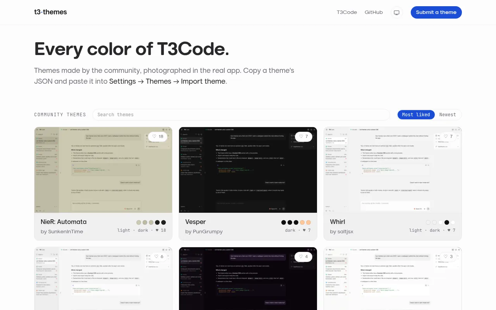

这个周末 X 上转发最多的两个开发工具更新，讲的都是「样子」而不是代码。Claude Code 桌面版现在可以用 mod 重新上色：你自己的颜色，加上对话背后的一段动态场景和覆盖其上的磨砂面板；Anthropic 还提供了一个示例插件，它的 /custom-theme 命令里有二十个场景。同一时间，开源的多智能体编程前端 T3 Code 合并了一个题为「agents can restyle T3 Code with theme colors and CSS」的 PR（按 UTC 于 11 月 14 日合并，目前只在 nightly 版本里）。对智能体说一句「给 T3 Code 换成 solarized 主题」，所有连着的网页和桌面客户端就会一起换装。
很容易把这当成换桌面壁纸。我们认为，这是设计系统团队必须提前规划的一件事的第一个公开、可用的例子：界面的外观通过智能体调用的 API 来改，改的人从来不会打开你的设计文件。两款工具做了不同的取舍，合在一起正好说明一个安全的主题接口需要什么。
$.theme.set，传入 colors、可选的 backdrop 和配色模式覆盖（需 v2.1.319 及以上）。颜色由 makeColors 生成：每个模式只给三个锚点色 surface-0、text-primary、text-muted，它就能算出整套配色。它会返回一个 problems 列表，凡是以「Desktop won’t paint this theme」开头的条目，都表示应用会拒绝这套主题。每个会话只有一个主题：最后调用的 mod 生效，而且一次调用会替换整个主题。appearance、一个 canvas 底色和一个 accent 强调色，其余由应用生成；可选的 css 字段用来加规则。两个智能体工具负责执行：t3_theme_read（读取主题和一份样式指南）和 t3_theme_set（发布并切换），并且只对运行在服务器本机、处于 Full access 模式的智能体开放。[data-chat-header] 和 [data-slot="button"]，只要其中一个从源码里消失，测试就会失败。原本没有钩子的元素也补上了（data-user-message-bubble、data-slot="project-monogram"）。文档说得很直白：类名每个版本都会变，所以要写 data- 属性。@import、image-set() 以及任何不是 data: 地址或 #id 的 url()，这样导入的主题或被提示注入的智能体就无法把屏幕内容发到别的服务器。如果某条规则把你需要的东西藏起来了，用 t3 theme set t3-chat 或快捷键 Cmd/Ctrl+Option/Alt+A 就能换回内置主题。主题 CSS 原本上限 20000 字符，一天后因为社区里有人整套重做界面碰到上限，提高到了 50000。
多年来，主题是一个由人点来点去的设置页。现在它是智能体替人发起的一次调用，往往只来自一句话的愿望。这改变了设计系统对外的责任：你的 Token 和钩子不再是内部实现，而是一份公开契约，承担任何 API 都有的义务：输入要少、要校验、要有版本、要能撤销。
两款工具把问题拆得很好。Claude Code 把输入压到最小（每个模式三个锚点色），让代码去生成并检查其余部分，这正是防止智能体交出灰底灰字的办法。T3 Code 保留了逃生口——原始 CSS——但给它围上了栏杆：只承诺具名钩子、不允许任何远程加载、有长度上限、有快捷键退路。两者都不让主题碰到信任相关的界面：Claude Code 的权限确认框，T3 Code 的远程请求。一个想被安全换装的产品，三层都要有。
要注意的地方写在 T3 Code 自己的限制里：智能体看不到改完的效果，所以指南让它小步修改、改完就问。而 Claude Code 的 mod 以你的权限运行、没有沙箱隔离，文档也明说了。从陌生人那里装的主题，首先是代码，其次才是颜色。让它重新上色之前，先看清它挂了哪些钩子。
同一份契约对你自己的编程智能体也有用。让智能体「把页头弄得安静一点」，它会改它能找到的任何东西；给它锚点色、角色 Token 和具名插槽，它就会改这些，而不是去翻生成出来的类名。三个低成本动作：给用户真正想改的二十来个部位加上 data-slot 名称；在构建里用几个锚点色生成亮色和暗色配色并做对比度检查；保留一个所有覆盖都能退回的内置主题。

data-slot 选择器，并加一个钩子消失就失败的测试。@import、image-set() 和外部 url()；只允许 data:，并设大小上限。# 把这段贴给你的编程智能体
把 <应用> 的样子改成 <一句话描述，例如「暖色纸张、墨色强调」>。
- 只改我们的主题契约： 里的锚点色
（亮色和暗色各自的 surface、text、muted、accent），以及
里列出的 data-slot 选择器。不要写类名。
- 生成配色后，列出所有低于 4.5:1（大字和控件低于 3:1）的
文字/背景组合，修好再继续。
- 主题 CSS：不用 @import、image-set()，url() 只允许 10 KB 以内的 data:。
- 不要改权限、支付或安全相关界面的样式。
- 给 <3 个关键页面> 各截亮色和暗色图，给我看，然后等我确认。
输出：选用的锚点色、对比度结果、改动的选择器，以及如何退回内置主题。 UI Hub 相关阅读：给智能体用的设计 Token、OKLCH 颜色与暗色模式，以及用 Lint 把智能体约束在设计系统里。